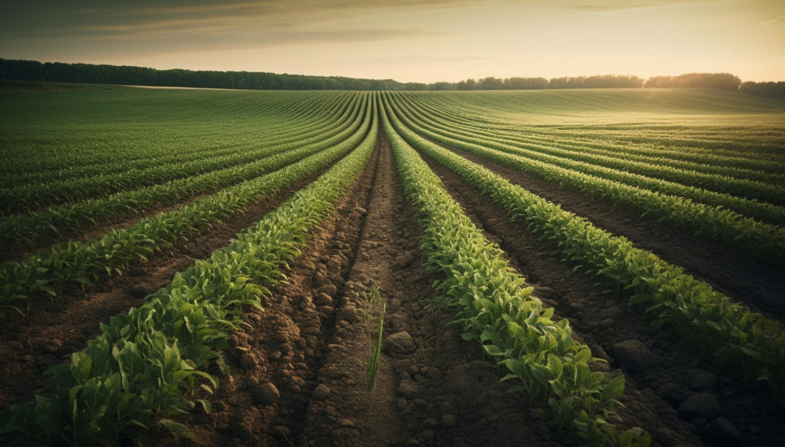

Do Brasil para o Mundo
Oferecemos gengibre de alta qualidade, cultivado com cuidado e dedicação em solo brasileiro.



Oferecemos gengibre de alta qualidade, cultivado com cuidado e dedicação em solo brasileiro.

Explorando novos horizontes na produção e exportação de gengibre, a Reinholz Ginger se destaca pelo cultivo inovador, armazenamento de excelência e um processo de beneficiamento cuidadoso, promovendo frescor e qualidade em cada entrega.
Experiência e inovação no universo do gengibre do plantio até a exportação.